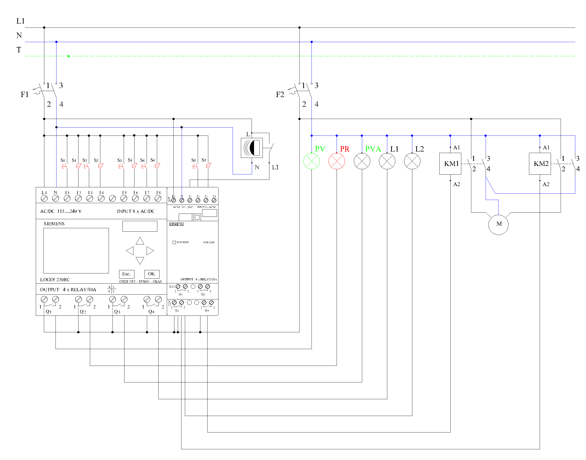

5.- Vivienda con control de alarma y persianas
1. Asignación de señales en el relé programable.
- I1: Pulsador marcha (S1) — contacto NO.
- I2: Pulsador paro (S1) — contacto NC.
- I3: Pulsador marcha (S2) — contacto NO.
- I4: Pulsador paro (S2) — contacto NC.
- I5: Pulsador marcha (S3) — contacto NO.
- I6: Pulsador paro (S3) — contacto NC.
- I7: Pulsador marcha (S4) — contacto NO. Subir persiana.
- I8: Pulsador paro (S4) — contacto NC. Final de carrera de subida.
- I9: Detector de movimiento (DM) — entrada I1 del módulo de ampliación DM8 230R.
- I10: Pulsador marcha (S5) — contacto NO. Bajar persiana (entrada I2 del módulo).
- I11: Pulsador paro (S5) — contacto NC. Final de carrera de bajada (entrada I3 del módulo).
- Q1: Piloto verde (PV).
- Q2: Piloto rojo (PR).
- Q3: Piloto verde alarma (PVA).
- Q4: Lámpara de alarma (L1).
- Q5: Lámpara del detector (L2) — salida Q1 del módulo de ampliación.
- Q6: Contactor KM1 — subir persiana (salida Q2 del módulo).
- Q7: Contactor KM2 — bajar persiana (salida Q3 del módulo).
Entradas digitales
Salidas digitales
2. Programa en FUP (LOGO!Soft Comfort)
| Bloque / Segmento | Lógica | Función |
|---|---|---|
| B001 RS | S = I1 | R = NOT I2 | Circuito activado → Q1; NOT B001 → Q2 |
| B002 Retardo a la conexión | Trg = I3, T = 5 s | Detecta pulsación larga de S2 |
| B003 RS | S = B002 | R = flanco ascendente de I3 | Memoriza que la pulsación fue larga |
| B004 Relé de impulsos | Trg = flanco descendente de I3 AND NOT B003 | R = NOT I4 OR NOT B001 | Pulsación corta de S2: L2 permanente ON/OFF |
| B005 Retardo a la desconexión | Trg = B002, T = 1 min | R = NOT I4 OR NOT B001 | L2 encendida 1 minuto |
| B006 AND / OR | Q5 = B001 AND (I9 OR B004 OR B005) | Salida lámpara del detector L2 |
| B007 Relé de impulsos | Trg = I5 AND B001 | R = NOT I6 OR NOT B001 | S3: activar / desactivar la alarma → Q3 |
| B008 RS | S = B007 AND I9 | R = NOT B007 | Disparo y enclavamiento de la alarma → Q4 |
| B009 RS | S = I7 AND B001 AND NOT B010 | R = NOT I8 OR NOT B001 OR flanco de I7 con B009 activo | Subida de la persiana → Q6 (KM1) |
| B010 RS | S = I10 AND B001 AND NOT B009 | R = NOT I11 OR NOT B001 OR flanco de I10 con B010 activo | Bajada de la persiana → Q7 (KM2) |
Los flancos se obtienen con los bloques «Flanco ascendente/descendente». Las salidas Q1…Q4 son del LOGO! base y Q5…Q7 son las salidas Q1…Q3 del módulo DM8 230R. Los bloques B009 y B010 se enclavan entre sí para que KM1 y KM2 nunca actúen a la vez.
3. Esquema
Esquema multifilar de la práctica 5.

×